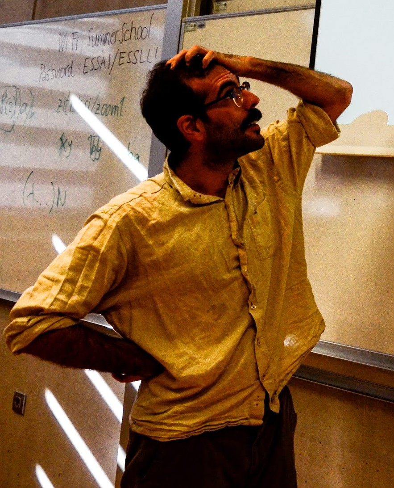

<div>
    <header class='major'>
        <p>
            <a href='mailto:fausto.carcassi@gmail.com'>
                &nbsp;&nbsp;Email
            </a><br />
            <a href='https://twitter.com/CarcassiFausto'>
                &nbsp;&nbsp;CarcassiFausto
            </a><br />
        </p>
    </header>

	<p>
	I <i>am</i> a Sardinian. I <i>work</i> as an assistant professor (in computational and experimental approaches to semantics and pragmatics) at the University of Amsterdam's linguistics department and the <a href="https://www.illc.uva.nl">Institute for Logic, Language, and Computation</a>. I am interested in language as a rich source of information about the mind, and therefore I work at the intersection of linguistics and cognitive science. Some questions I find exciting in this area:
	<ul>
		<li>How do we understand what others want (or don't want) to communicate with a certain utterance in a certain context?</li>
		<li>Why are there restrictions on typologically attested meanings?</li>
		<li>How are concepts encoded in the mind and how do we learn new ones from observations?</li>
	</ul>
	My pronouns are he/him (and I do not mind being called 'they' if you use gender-neutral language by default).
	</p>

	<p> 
	Before my current position, I did a Marie Skłodowska-Curie Actions Individual Fellowship at the <a href="https://uni-tuebingen.de/en/faculties/faculty-of-humanities/departments/modern-languages/department-of-linguistics/" > University of Tübingen </a>, working alongside <a href="https://michael-franke.github.io/heimseite/">Michael Franke</a>. The project employed a combination of computational and experimental approaches to advance our understanding of plausible deniability.
	</p>

	<p>
	Before Tübingen, I completed a postdoctoral fellowship at the ILLC under the guidance of <a href="https://jakubszymanik.com">Jakub Szymanik</a>. As a part of the Cognitive Semantics and Quantities project, I explored the semantics and pragmatics of quantifiers through a Bayesian and evolutionary lens.
	</p>

	<p>
	I earned my PhD from the <a href="http://www.lel.ed.ac.uk/cle/">Centre for Language Evolution</a> at the University of Edinburgh in 2020, where I was mentored by <a href="http://www.lel.ed.ac.uk/~simon/">Simon Kirby</a> and <a href="https://mariekeschouwstra.github.io/">Marieke Schouwstra</a>. My doctoral research focused on the evolutionary mechanisms that result in cross-linguistically consistent properties in scalar language semantics, encompassing gradable adjectives, quantifiers, and modals. Specifically, I investigated two universal aspects of scalar semantics: monotonicity and extremeness.
	</p>

	<p>
        <strong>Research interests:</strong>
        scalar language; quantification; conceptual spaces; language evolution;
        Bayesian cognitive modelling; pragmatics; Bayesian statistics; 
        probabilistic Language of Thought;
    </p>

    <p>
        <strong>Other academic interests:</strong>
        free energy principle; predictive processing; natural language ontology;
    </p>
</div>
